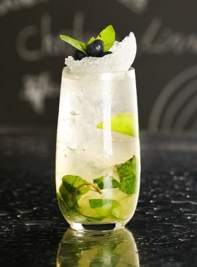
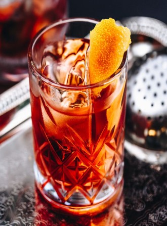

基酒 調酒 咖啡 料理  Mojito 清涼系飲品的不敗經典 夏日中熱門的雞尾酒之一 酸甜口感，是女生們絕對會喜歡的!😋  Negroni 別在那個弄你! 甘與苦的黃金比例 酒吧男士必喝之一 👍👍 Old Fashioned 往日情懷 最為經典的古典 ↪威士忌經典調酒 一杯世界上最頑固的酒 Long Island Iced Tea 趕進度的最佳夥伴 這杯根本沒有茶的酒，打著「冰茶」的名號在酒吧界大紅大紫了幾十年😈